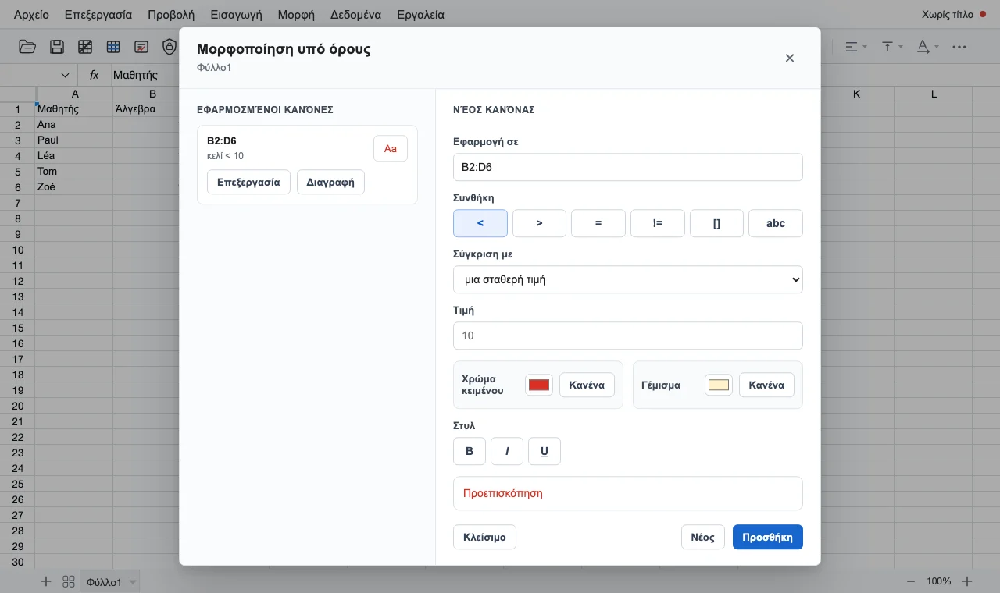

Μορφοποίηση υπό όρους
Ένας κανόνας αλλάζει την εμφάνιση των κελιών μιας περιοχής που πληρούν μια συνθήκη. Ακολουθεί τις τιμές, πληκτρολογημένες ή υπολογισμένες.
Δημιουργία κανόνα
- Επιλέξτε την περιοχή, χωρίς την κεφαλίδα της.
- ή Μορφή › Μορφοποίηση υπό όρους.
- Επιλέξτε τη συνθήκη, την τιμή σύγκρισης, τα χρώματα ή το στυλ.
- Προσθήκη.

| Συνθήκη | Το κελί |
|---|---|
< | είναι μικρότερο από |
> | είναι μεγαλύτερο από |
= | είναι ίσο με |
!= | είναι διάφορο από |
[] | είναι ανάμεσα σε δύο τιμές, με τα άκρα |
abc | περιέχει κείμενο, πεζά ή κεφαλαία |
Με τι συγκρίνεται
| Σύγκριση με | Παράδειγμα |
|---|---|
| μια σταθερή τιμή | οι βαθμοί κάτω από 10 |
| ένα σταθερό κελί | οι βαθμοί κάτω από το όριο γραμμένο στο F1 |
| μια στήλη της ίδιας γραμμής | στη στήλη C, οι τιμές πάνω από εκείνες της στήλης B, γραμμή προς γραμμή |
Εμφάνιση
Τα Χρώμα κειμένου και Γέμισμα επιλέγουν τα χρώματα, το Κανένα τα αφαιρεί· τα B, I, U κάνουν έντονα, πλάγια, υπογραμμισμένα. Χρειάζεται τουλάχιστον ένα χρώμα ή στυλ.
Πολλοί κανόνες
Η αριστερή στήλη απαριθμεί τους κανόνες του φύλλου: Επεξεργασία, Διαγραφή. Αν εφαρμόζονται πολλοί σε ένα κελί, υπερισχύει ο τελευταίος της λίστας, χρώμα προς χρώμα.
Σε περιοχή με κανόνα, τα χρώματα κειμένου και φόντου που δόθηκαν απευθείας στα κελιά δεν εμφανίζονται πια.
Οι κανόνες αποθηκεύονται στο αρχείο Excel ως μορφοποίηση υπό όρους του Excel.